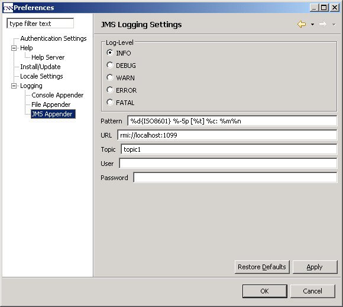

JMS Appender Settings

JMS Appender Settings |
|

Option |
Description |
Default |
Log level |
The log level defines the threshold for log messages that are propagated over JMS. Only log messages with at least the chosen log level are propageted. The possible log levels are: INFO, DEBUG, WARNING, ERROR, FATAL. |
INFO |
Pattern |
The pattern defines the general layout of file log messages that are generated by the CSS. For a description of pattern symbols, please click here. |
%d{ISO8601} %-5p [%t] %c: %m%n |
URL |
The URL of the target JMS server. |
rmi://localhost:1099 |
Topic |
The JMS topic on the target JMS server. |
topic1 |
User |
The user name for the target JMS server. |
blank |
Password |
The password for the target JMS server. |
blank |